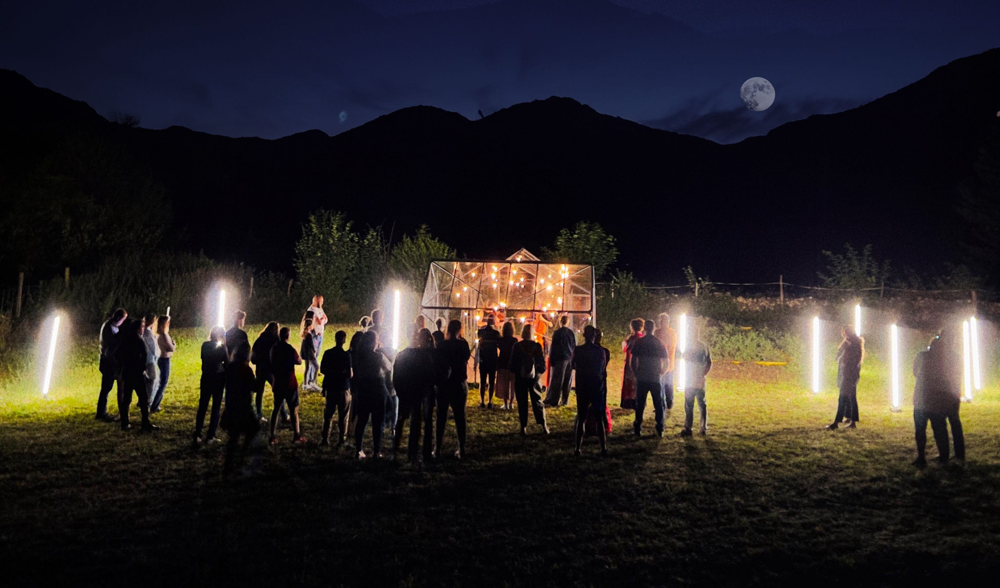

Festival ADAR 2027

The seventh edition of Festival ADAR runs a fortnight across rural Asturias, from 2 to 15 August: residencies, micro-concerts, and "ADAR en Ruta" stops in small Asturian towns, played in churches, hórreos and mountain villages rather than concert halls.
Performers
- Guillermo Laportaflute · artistic direction
- Josefina Urracapiano
- CreArtBox stringsstring quartet
- Festival guests
About CreArtBox
CreArtBox is a New York–based chamber music and multimedia ensemble founded in 2013, performing at The DiMenna Center for Classical Music and on tour internationally. The ensemble's New York Series presents approximately six productions a year - combining commissioned premieres, reimagined classics, and collaborations with visual artists, filmmakers, and writers.
In parallel, CreArtBox runs Festival ADAR each August in rural Asturias, Spain - an international arts festival pairing chamber music with site-specific performance in churches, hórreos, and mountain villages. Both the New York Series and Festival ADAR are produced by CreArtBox, Inc., a 501(c)(3) non-profit.